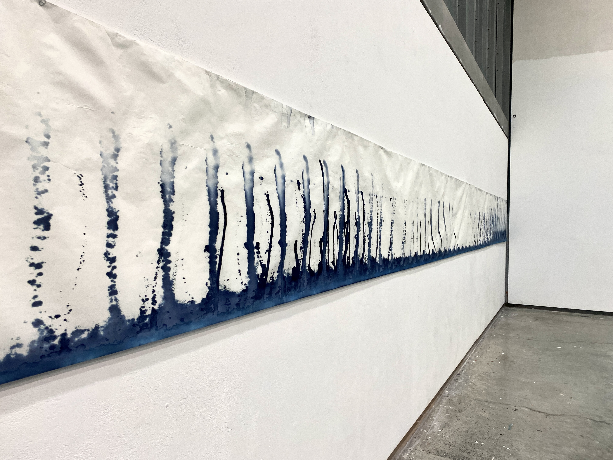
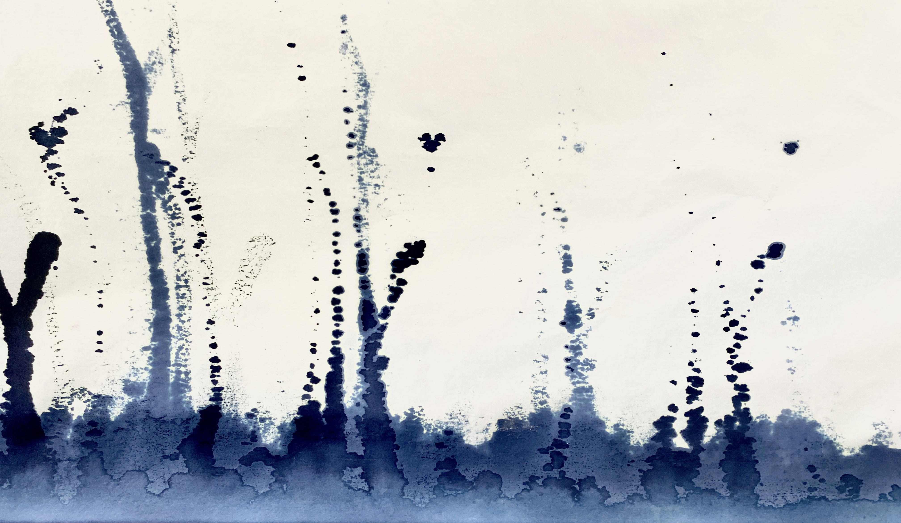
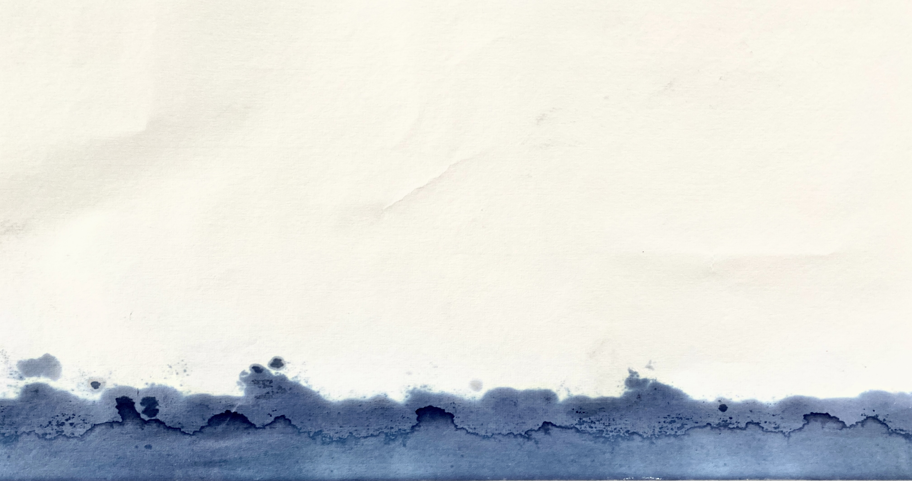
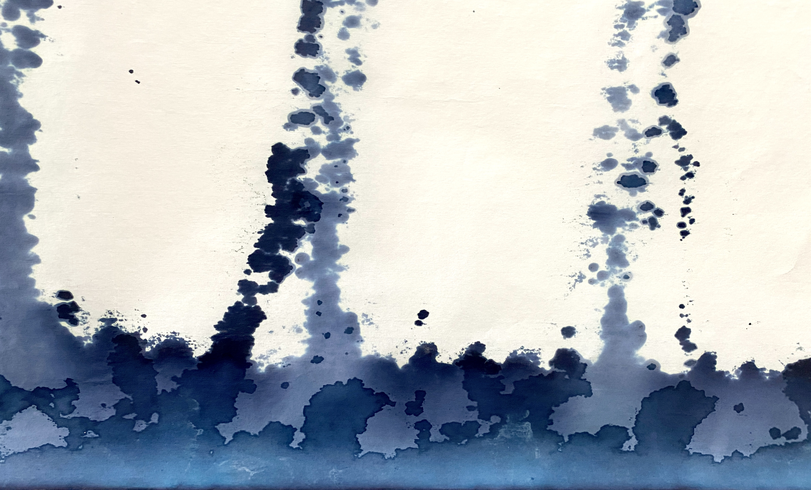

LA DISSOLUTION DE L'HISTOIRE II
Cette feuille longue qui s'agit d'un ‘panorama abstrait’ que j'ai fait sur du papier de riz en utilisant la méthode de la cyanotype. Je l'ai fait un côté du papier de riz roulé trempé dans ce solvant bien proportionné, dans cet état incontrôlé et aléatoire, et aussi en utilisant du soleil, l'eau, l'air et d'autres éléments naturels pour reproduire un paysage imaginaire ou impressionnable. Je l’ai suspendu par une file de fer fine comme ça, pour arriver un mouvement des papiers quand on marche devant.



